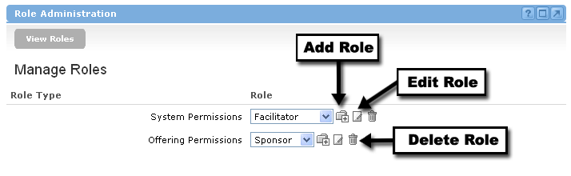

Groupware has two levels of user-defined roles: System Level and Offering Level. These roles are defined within the Role Administration channel found under the Administration link.
In most cases, the System Administrator facilitates the creation/editing of roles. However, the permission for this activity is completely flexible and can be allocated to any role by the System Administrator.
The Role Administration Channel also facilitates the setup and editing of permissions at the System and default Offering level. This information will be covered in the next lesson: Permissions and Security.

System Level Roles
A System Level Role corresponds to the role that users are assigned as they are added into the system. This role will impact the permissions that users will have within the Administration section of the Groupware. The following channels have permissions set through System level roles:
In most cases, general users will have very limited permissions associated with the Administrative functions.
Offering Level Roles Offerings can be compared to the classes in a learning context or groups of like minded individuals. Users must be enrolled into offerings in order to take part in the course or group "offered" by an institution. An Offering Level Role corresponds to the role that users will play within an offering (e.g., student, instructor, member, observer). There are no limits to the number or types of roles that can be created at the offering level. The Offering Level Role will define all of the permissions that a role has within an offering. The following channels will have permissions set within the Offering level role:
|
Adding, Editing, and Deleting Roles Add -- To add a new role into the system, simply click the Add icon next to either the System Permissions or Offering Permissions within the Role Administration Channel. You will be prompted for a title of the new role, and will be asked to assign the specific permissions associated with this role. Once completed, click the Add button at the bottom of the Permissions list. Edit -- To edit an existing role in the system, find the associated role in the drop-down box, and then click the Edit icon next to either the System Permissions or Offering Permissions within the Role Administration Channel. You will have the opportunity to change the title of the role, as well as any of the permissions associated with that role. Delete -- To delete an existing role in the system, find the associated role in the drop-down box, and then click the Delete icon button next to either the System Permissions or Offering Permissions within the Role Administration Channel. You will be asked to confirm the deletion before it takes effect. |
Default Roles The Academus system comes with a variety of defaulted roles and permissions. These can be utilized "as is" or modified to meet your needs. These default roles, however, cannot be deleted from the system. The following is a list of default system level roles:
The following is a list of default offering level roles:
|